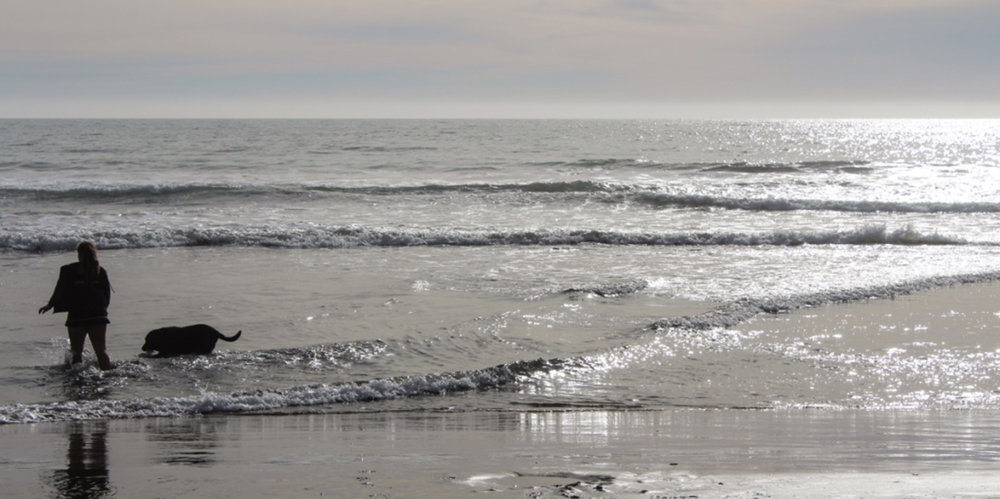
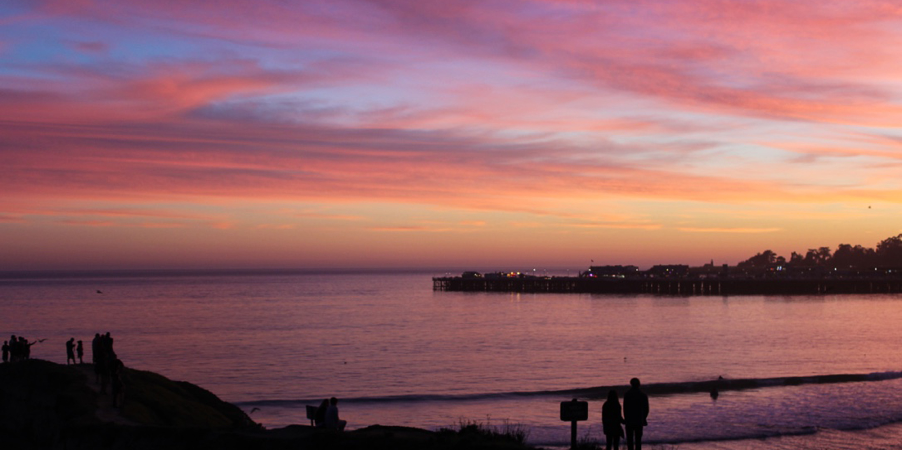
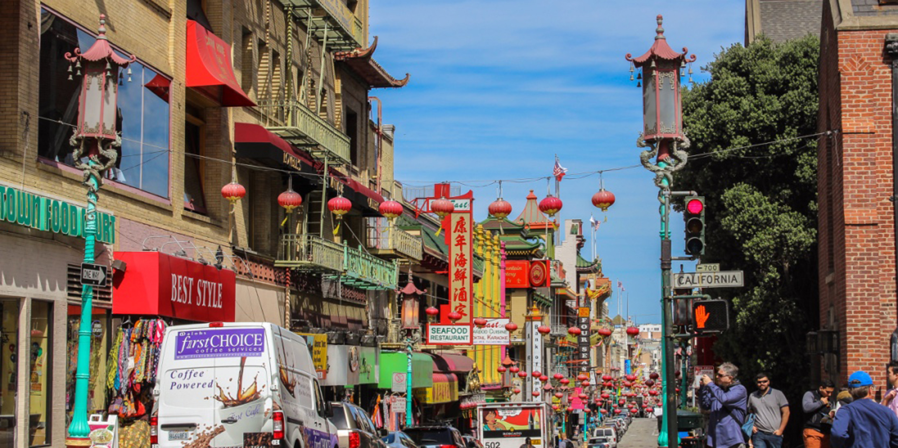

Photos

Photos



As traveling is one of my biggest passions,
I wanted to show
myself through some pictures
I have taken that sum up some
of the best experiences
I have ever been through. The most
memorable one was
when Santa Cruz became my home for
five months.
If sunsets are enough to make it a worth
destination,
let alone everything else.